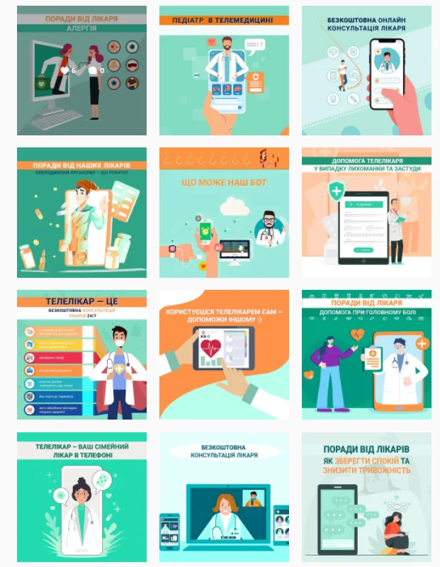
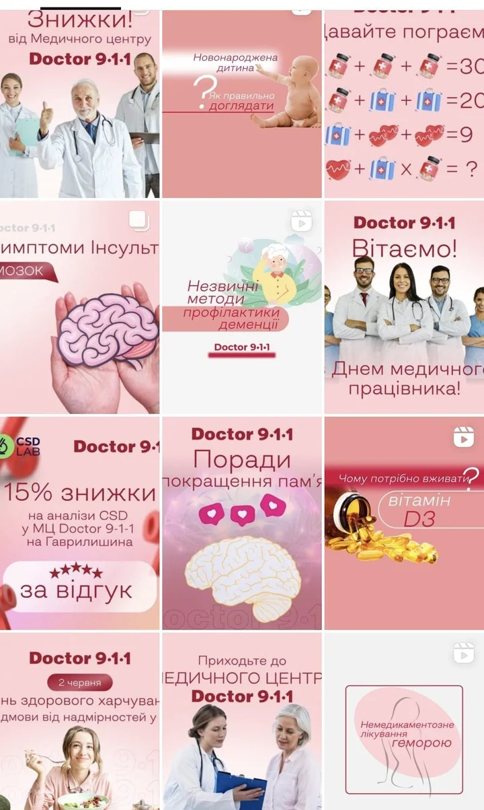

Кейс: комплексне SMM-просування сервісу телемедицини «Телелікар»
/клієнт:
Телелікар — цілодобовий сервіс безкоштовних консультацій лікаря в смартфоні (Viber, Telegram, вебсайт). Проєкт від мережі аптек «9‑1‑1».
/Цілі:
- Побудувати довіру до телемедичного сервісу серед широкої аудиторії
- Сформувати позитивний імідж — як сучасного, мобільного та зручного сервісу
- Збільшити впізнаваність та залучення аудиторії до взаємодії
- Стимулювати трафік до Telegram/Viber-бота (додатково)
/Що ми зробили:
1. Розробили SMM-стратегію з нуля:
- Провели аудит Facebook-сторінки (до старту — лише 1000 підписників, контент неактуальний, активності майже не було)
- Описали портрети ЦА (молоді батьки, люди середнього віку, старші користувачі)
- Проаналізували конкурентів та сформували візуальну й контентну стратегію
- Створили нову сторінку в Instagram, оформили її з нуля та запустили регулярне ведення
2. Контентна стратегія та створення контенту:
Регулярні публікації: 10–14 постів/місяць, 60+ stories/місяць


Види контенту:
- Корисний (поради лікарів, як працює сервіс)
- Рекламний (просування функцій і переваг)
- Розважальний і залучаючий (тести, міні-ігри, реакції)
- Іміджевий (історії користувачів, відгуки)
Візуали: унікальні макети, анімація, дизайн у єдиному стилі
3. Брендинг і технічна підготовка:
- Оформлення Facebook і Instagram (обкладинки, опис, Highlights)
- Ребрендинг: змінили назву сторінок із «Телемедицина» на «Телелікар» — більш людяно й зрозуміло. А потім — на «Doctor 9‑1‑1 Телелікар»
- Модерація та робота з негативом: пояснювали специфіку сервісу, нейтралізували скепсис серед старшої ЦА
4. Рекламна стратегія:
- Кампанії на залучення, підписників та охоплення
- Активне А/В-тестування креативів і меседжів
/Результати (жовтень 2020 — 2024):
- Щомісячний приріст у Facebook: 1000+ підписників (при запланованих 300)
- Ціна підписника у Facebook: 1,27 грн (при запланованих 9,35 грн)
- Приріст підписників в Instagram: 200+ щомісяця
- Охоплення та покази — майже вдвічі перевищили прогноз
- Зросла кількість позитивних відгуків про сервіс на сторінках
/Чому це спрацювало:
Ми зробили сервіс ближчим до людей — через зрозумілу комунікацію, живий контент, якісний візуал і послідовну роботу з репутацією. Завдяки стратегічному підходу та грамотному бюджету вдалося перевершити очікування і побудувати активну онлайн-спільноту навколо Телелікаря.